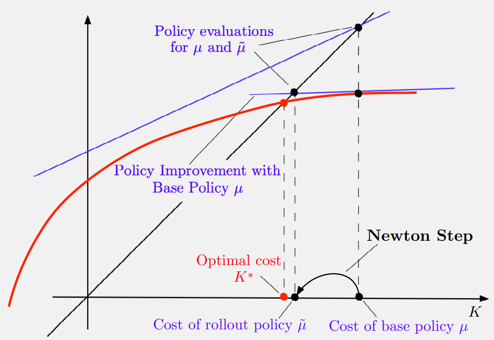

1. The Linear Quadratic Problem
We explore a classical problem with linear dynamics and quadratic cost. This provides deep insights into the Bellman equation.
General Form
System: \( x_{k+1} = Ax_k + Bu_k \)
Cost: \( g(x, u) = x^TQx + u^TRu \)
- \( Q, R \) are positive definite symmetric matrices.
- No control constraints.
One-Dimensional Version
To simplify, we look at the scalar case:
\[ x_{k+1} = ax_k + bu_k \] \[ \text{Cost} = \sum_{k=0}^{\infty} (q x_k^2 + r u_k^2) \]This scalar version captures the core algorithmic challenges.
2. The Riccati Equation
The optimal cost is quadratic: \( J^*(x) = K^* x^2 \).
The scalar \( K^* \) satisfies the Riccati Equation \( K = F(K) \), where:
\[ F(K) = \frac{a^2 r K}{r + b^2 K} + q \]The optimal policy is linear: \( \mu^*(x) = L^* x \).
Fig 1: The Riccati Operator \( F(K) \)
Stable Linear Policy
For a stable linear policy \( \mu(x) = Lx \) (where \( |a+bL| < 1 \)), the cost is \( J_\mu(x)=K_L x^2 \).
\( K_L \) is the unique solution to the linear equation:
\[ K = F_L(K) = (a + bL)^2 K + q + rL^2 \]Fig 2: Riccati Equation for Stable Policy
3. Value Iteration (VI)
The VI algorithm generates a sequence of quadratic costs \( J_k(x) = K_k x^2 \).
\[ K_{k+1} = F(K_k) \]Starting from any \( K_0 \geq 0 \), it converges to \( K^* \).
VI Convergence Animation
Visualizing convergence of K to K*
4. Approximation as Newton's Method
Approximation in value space with one-step lookahead can be viewed as a Newton step for solving the Bellman equation.
One-Step Lookahead
Maps a terminal cost approx \( \tilde{J} \) to the cost of the one-step lookahead policy \( \tilde{\mu} \).
This is equivalent to linearizing the Riccati operator \( F \) at \( \tilde{K} \) and solving the linear system.
Fig 3: One-Step Lookahead as Newton Step
Multistep Lookahead
For \( \ell \)-step lookahead, we perform \( \ell-1 \) VI steps (staircase) before the Newton step.
5. Rollout & Policy Iteration
Policy Iteration is simply repeated application of non-truncated rollout.
Quadratic Convergence
For the LQ problem, Policy Iteration (Newton's method) converges quadratically to the optimal cost.
\[ ||K_{k+1} - K^*|| = O(||K_k - K^*||^2) \]6. Test Your Knowledge
1. The Riccati operator \( F(K) \) is:
2. For a stable linear policy \( \mu(x) = Lx \), the cost equation is:
3. One-step lookahead minimization is equivalent to:
4. Policy Iteration convergence rate for LQ problems is:
5. In truncated rollout, we use:
🔍 Spot the Mistake!
Scenario 1:
"The Riccati equation always has a unique solution."
Scenario 2:
"Value Iteration converges in a finite number of steps for LQ problems."
Scenario 3:
"Newton's method is slower than Value Iteration."
Scenario 4:
"Any linear policy is stable."
Scenario 5:
"Rollout is an offline planning method."